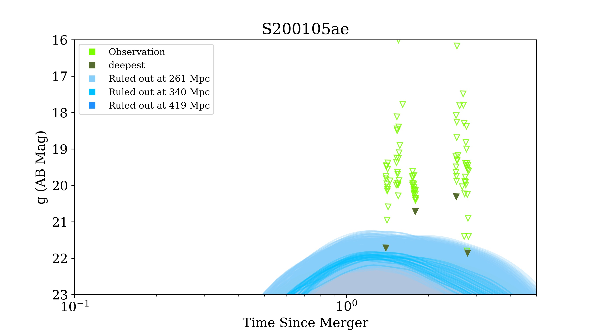
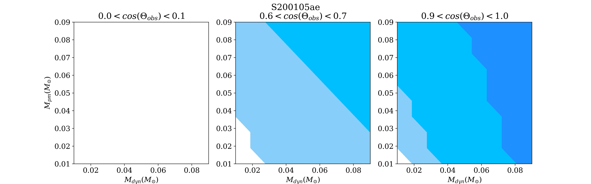

Module¶
Model¶
Constraint¶
Model Constraint¶
This module provide a KN parameter constraints without EM conterpart detection but upper limit.
Before you start, you should define model you use in the module. For instance, default model is BHNS model by
Dietrich el at, and BNS model by Bulla. For flexibility, I will upgrade a surrogate model by myself and
a training module that could fit any model you input.
After definition of KN model, you and inject parameter ranges and an event.
with deepest mode and seperate observations to 5 clusters using K-means, and filter_ID_list is 1 and 2.
Then constraint model parameters and plot.
 